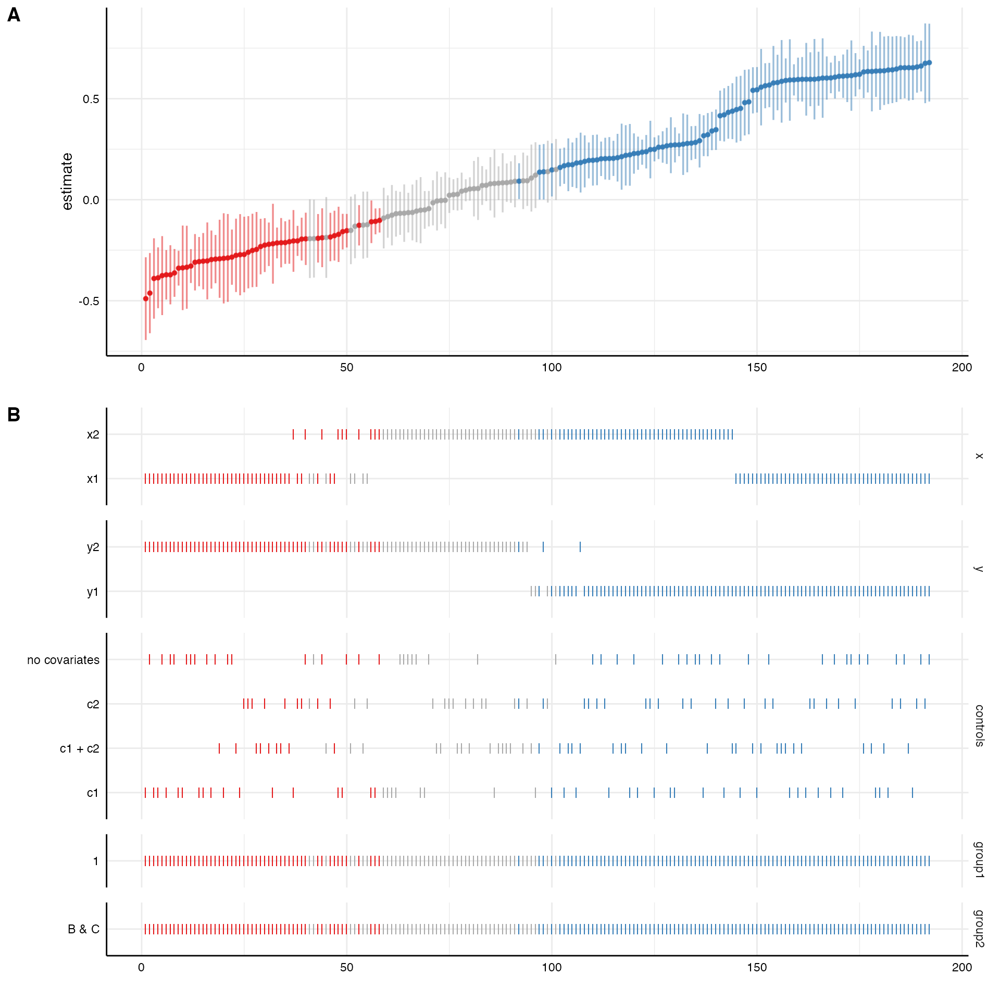
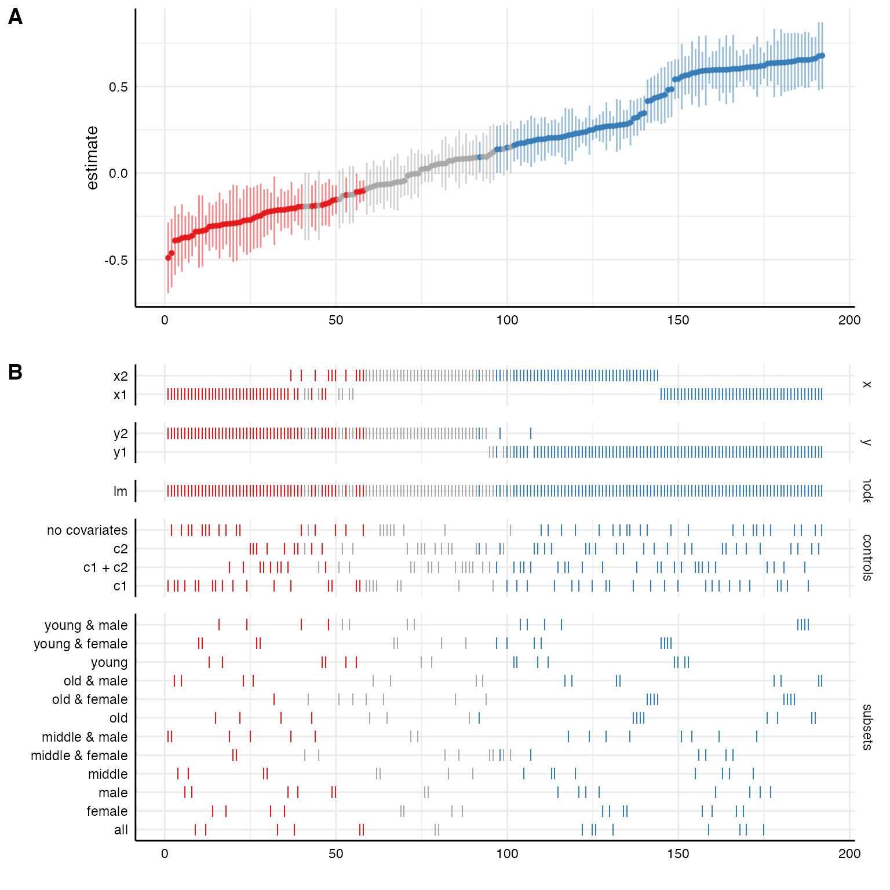

How to customize plots
custom-plot.rmdThis vignette exemplifies different ways to plot the specification curve. In general, the function plot_specs() takes care of the overall process. However, more specific customizations are possible once we use the more specific functions plot_curve(), plot_choices, and plot_samplesizes(). These function produce regular ggplot-objects that can be customized further.
1. Run the specification curve analysis
In order to have some data to work with, we run the minimal example contained in the package.
library(specr)
library(dplyr)
# run spec analysis
results <- run_specs(example_data,
y = c("y1", "y2"),
x = c("x1", "x2"),
model = "lm",
controls = c("c1", "c2"),
subset = list(group1 = unique(example_data$group1),
group2 = unique(example_data$group2)))Let’s quickly get some ideas about the specification curve by using summarise_specs()
summarise_specs(results, group = c("x", "controls"))## # A tibble: 8 x 9
## # Groups: x [2]
## x controls median mad min max q25 q75 obs
## <chr> <chr> <dbl> <dbl> <dbl> <dbl> <dbl> <dbl> <dbl>
## 1 x1 c1 3.16 4.50 -2.05 8.96 0.581 6.39 123
## 2 x1 c1 + c2 3.16 4.46 -1.94 8.49 0.228 6.25 123
## 3 x1 c2 3.79 4.51 -1.61 9.14 0.632 6.48 123
## 4 x1 no covariates 3.95 4.21 -1.80 9.28 1.13 6.73 123
## 5 x2 c1 4.75 4.77 -0.258 8.75 1.36 7.79 123
## 6 x2 c1 + c2 4.35 4.74 -0.0841 8.71 1.08 7.14 123
## 7 x2 c2 4.40 4.78 0.373 9.58 1.18 7.61 123
## 8 x2 no covariates 4.81 4.92 0.463 9.22 1.57 8.12 123We see that it makes quite a difference whether x1 or x2 is used as independent variable.
2. A simple way to visualize the results
The simplest way to visualize most of the information contained in the results data frame is by using the plot_specs() function.
plot_specs(results)
We can further customize that function, e.g., by removing unnecessary information or by reordering/transforming the analytical choices (and thereby visualize specific contrasts).
plot_specs(results,
choices = c("x", "y", "controls", "subsets"), # model is not plotted
rel_heights = c(0.75, 2)) # changing relative heights of the two parts
# Investigating specific contrasts
results %>%
mutate(group1 = ifelse(grepl("group1 = 0", subsets), "0", "1"),
group2 = ifelse(grepl("group2 = A", subsets), "A", "B & C")) %>%
plot_specs(choices = c("x", "y", "controls", "group1", "group2"), rel_heights = c(2.4, 1.9))
3. An alternative way to visualize the results
3.1. Plot curve and choices seperately
Alternatively, we can also plot the curve and the choice panel individually and bind them together afterwards.
# Plot specification curve (p1)
p1 <- plot_curve(results) +
geom_hline(yintercept = 0, linetype = "dashed", color = "grey") +
ylim(-8, 12) +
labs(x = "", y = "unstandarized regression coefficient") +
theme_classic()
# Plot choices (p2)
p2 <- plot_choices(results) +
labs(x = "specifications (ranked)") +
theme_classic() +
theme(strip.text.x = element_blank())
# Combine plots
plot_specs(plot_a = p1,
plot_b = p2,
labels = c("", ""),
rel_height = c(2, 2.5))
3.2. Include sample size histogram
The additional function plot_samplesizes() provides and additional panel that can be added via the cowplot::plot_grid()
p3 <- plot_samplesizes(results) +
theme_classic()
# Combine via cowplot
cowplot::plot_grid(p1, p2, p3,
ncol = 1,
align = "v",
rel_heights = c(1.5, 2, 0.8),
axis = "rbl")